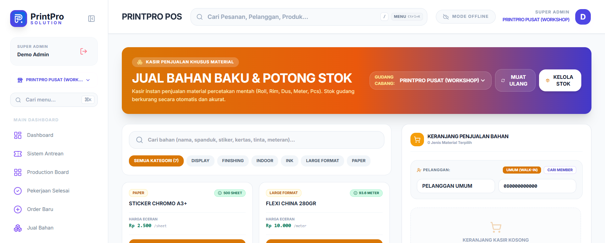
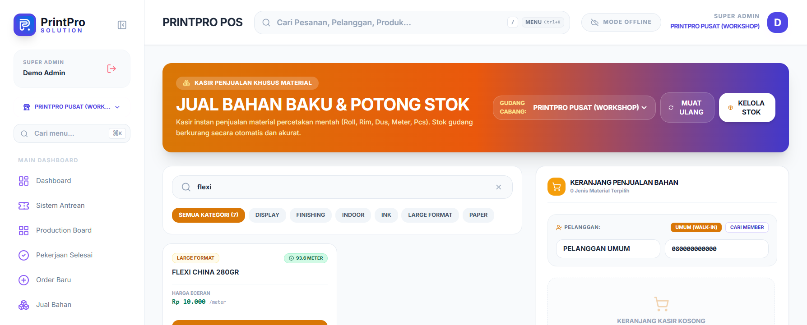
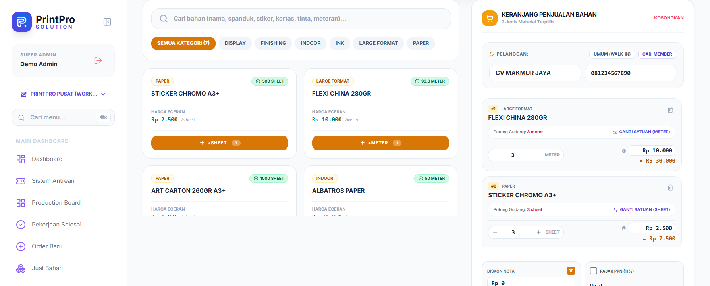
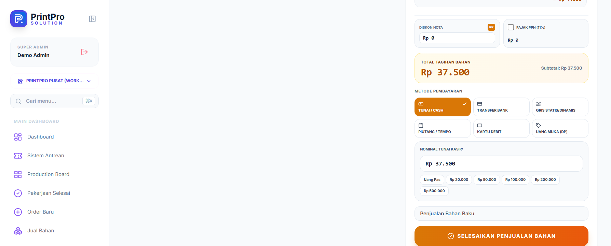
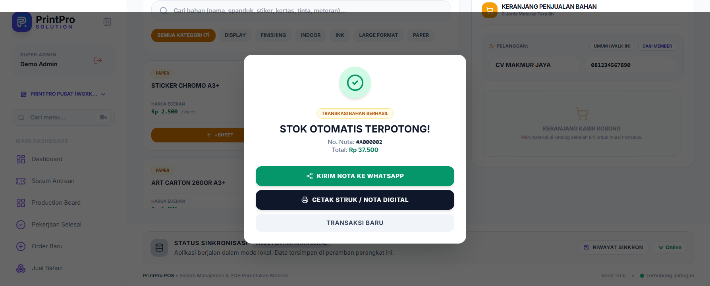
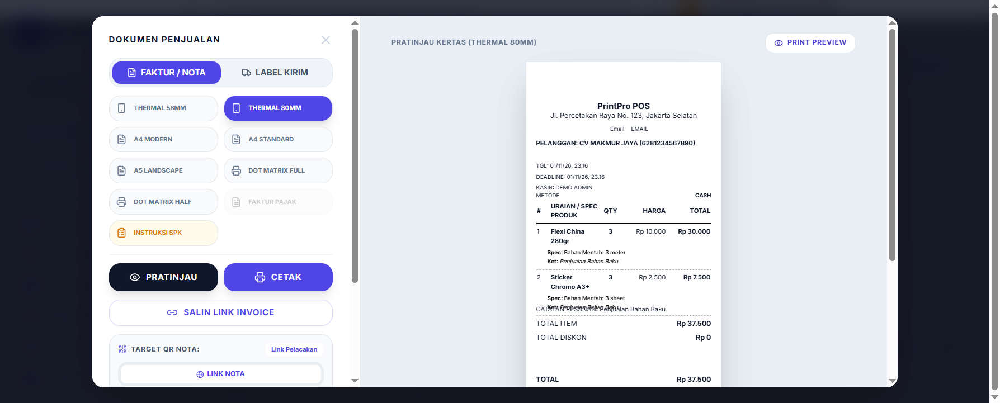

Bab 12 dari 27
Jual Bahan
Menu Jual Bahan untuk penjualan bahan baku (kertas, tinta, kain, akrilik) tanpa proses produksi.
- Pilih bahan dari stok.
- Masukkan jumlah dan harga jual.
- Pilih pelanggan (opsional untuk walk-in).
- Pilih metode pembayaran dan simpan.
- Stok bahan berkurang otomatis dan tercatat di laporan penjualan.
Alur input jual bahan
Buka halaman Jual Bahan — Klik menu Jual Bahan. Banner Jual Bahan Baku & Potong Stok menampilkan pemilih Gudang Cabang, tombol Muat Ulang, dan Kelola Stok. Kolom kiri berisi katalog bahan beserta sisa stok (mis.
93.6 METER) dan Harga Eceran; kolom kanan adalah Keranjang Penjualan Bahan yang masih kosong.
Gambar 12.1 — Halaman Jual Bahan dengan katalog stok dan keranjang kosong. Cari bahan — Ketik pada kolom Cari bahan (nama, spanduk, stiker, kertas, tinta, meteran)... atau persempit dengan pil kategori (Semua Kategori, Display, Finishing, Indoor, Ink, Large Format, Paper). Hanya bahan yang cocok yang tetap tampil.

Gambar 12.2 — Hasil pencarian "flexi": Flexi China 280gr stok 93,6 meter. Masukkan bahan ke keranjang — Klik tombol + METER / + SHEET / + PCS pada kartu bahan. Setiap klik menambah satu baris keranjang; gunakan stepper jumlah untuk mengubah qty dan klik kolom @ harga bila perlu nego harga jual per unit. Baris juga menyediakan Ganti Satuan bila menjual dengan satuan yang berbeda dari satuan gudang. Teks Potong Gudang pada tiap baris menunjukkan seberapa besar stok gudang akan berkurang.

Gambar 12.3 — Dua bahan terpilih: Flexi China 280gr 3 m (Rp 30.000) dan Sticker Chromo A3+ 3 sheet (Rp 7.500). Tentukan pelanggan — Secara bawaan penjualan tercatat atas Pelanggan Umum (Walk-In). Untuk menjual ke member, klik Cari Member lalu pilih namanya; data dan level member otomatis terisi karena level memengaruhi harga.
Atur pembayaran — Periksa Total Tagihan Bahan, isi Diskon Nota (tombol RP untuk memindah ke persen) atau centang Pajak PPN (11%) bila perlu. Pilih Metode Pembayaran: Tunai / Cash, Transfer Bank, QRIS Statis/Dinamis, Piutang / Tempo, Kartu Debit, atau Uang Muka (DP). Untuk tunai, isikan Nominal Tunai Kasir atau pakai pintasan Uang Pas dan pecahan yang tersedia. Lengkapi catatan bila diperlukan, lalu klik Selesaikan Penjualan Bahan.

Gambar 12.4 — Total tagihan Rp 37.500 dengan metode Tunai/Cash dan nominal pas. Simpan dan verifikasi — Modal Stok Otomatis Terpotong! menampilkan No. Nota (mis.
#A000002) dan total transaksi, beserta tombol Kirim Nota ke WhatsApp, Cetak Struk / Nota Digital, dan Transaksi Baru. Keranjang langsung kembali kosong.
Gambar 12.5 — Transaksi bahan berhasil dengan nota #A000002 senilai Rp 37.500. Cetak nota — Tombol Cetak Struk / Nota Digital membuka Dokumen Penjualan berisi pratinjau nota dan pilihan format: Faktur/Nota, Label Kirim, Thermal 58/80 mm, A4 Modern/Standard, A5 Landscape, Dot Matrix, hingga Instruksi SPK, lengkap dengan Salin Link Invoice.

Gambar 12.6 — Pratinjau nota thermal 80 mm beserta rincian potongan stok per bahan.
Setelah transaksi disimpan, stok gudang bahan berkurang otomatis dan penjualan tercatat pada Riwayat Transaksi serta laporan penjualan.
Pastikan harga jual bahan tidak lebih rendah dari harga pokok, kecuali memang kebijakan toko.